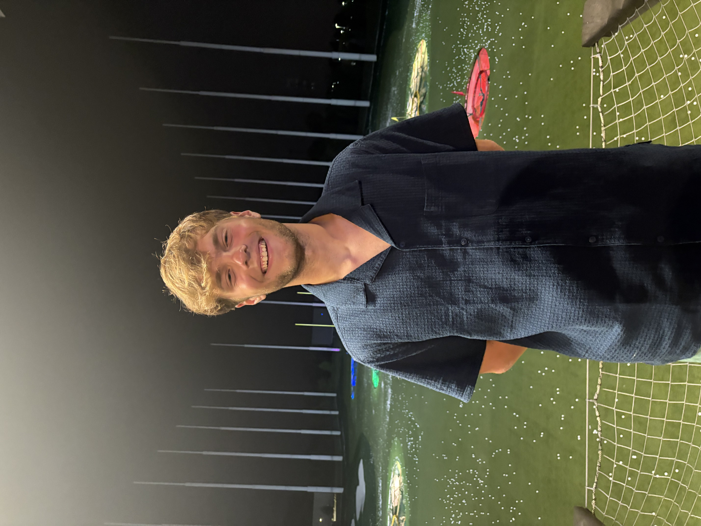

Journalist
I oversee the operations of the diversions desk, covering arts & culture stories, managing a team of small writers, editing stories and publishing them through WordPress.
I wrote under the Diversions desk, covering arts & culture events on the University of Maryland’s campus, reviewing new releases of albums and TV shows, and commentating on current pop culture events.
I oversee 2-3 news, feature, and/or multimedia stories per week, ensuring that the stories adhered to AP Style and proper grammar, as well as fact-checking each claim.
I reported, wrote, and photographed for the Features desk, producing weekly articles on campus events at the University of Maryland.